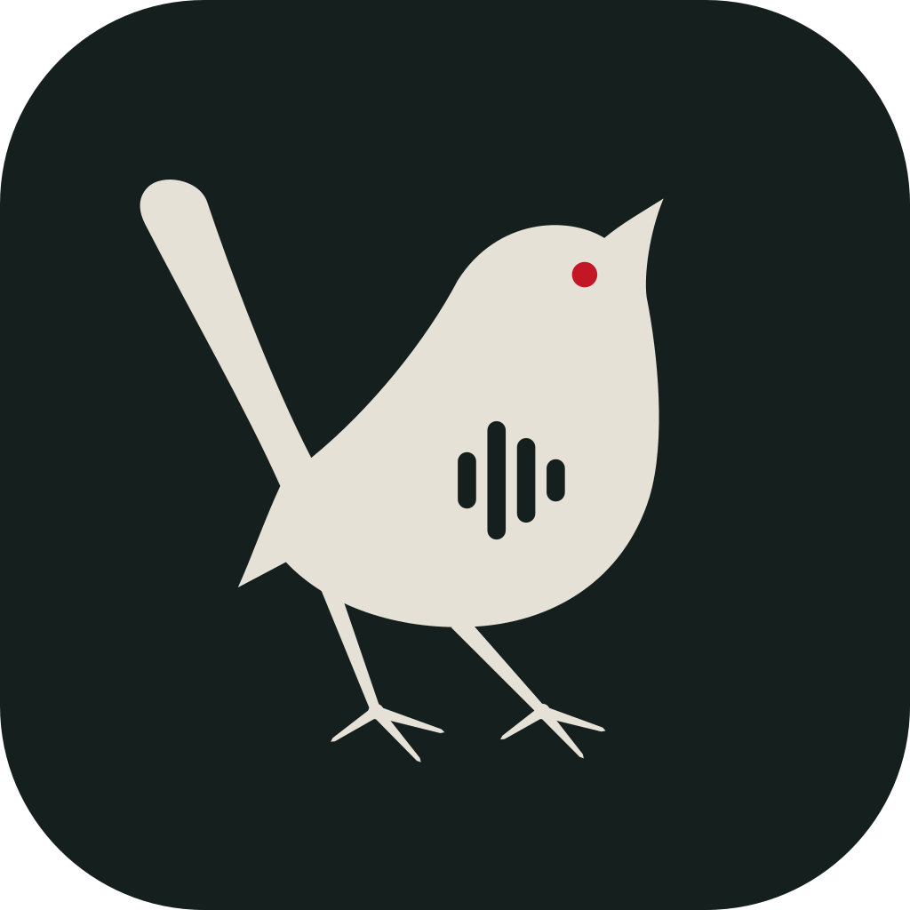
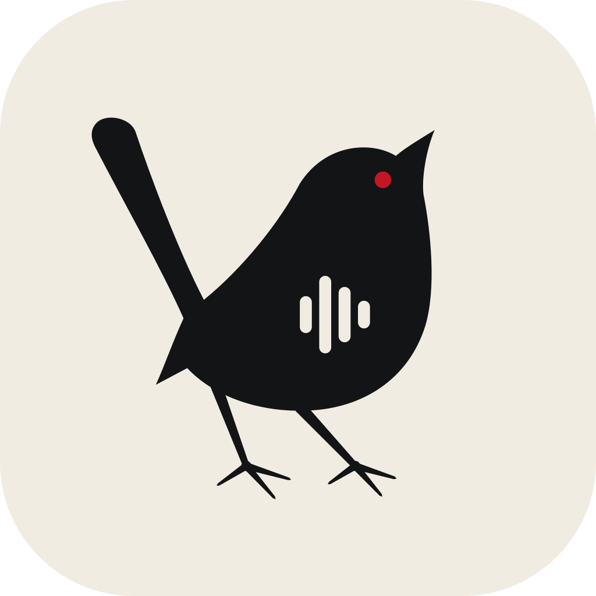

Interface foundations · Dark theme
Interface foundations · Dark theme

Colour
bg#101816
surface#17211e
surface2#1f2b27
text#efebe3
text2#b3b8b1
text3#89928d
accent#b8323b
accent-text#f2858a
Type
LibraryYoung Serif 34 / 40 · page titles, album and artist names, lyrics
Recently addedInstrument Sans 600 20 · section heads
Chandelier500 16 · row titles400 13 · metadata600 12 · overline
Components
ChandelierSia · 1000 Forms Of Fear
3:36Cellophane
4:25CellophaneSia
Motif
The four chest bars from the mark become the now-playing indicator. Red is reserved for the eye in the logo, primary actions and live state, nothing else.
Interface foundations · Light themeColour
bg#f4efe6
surface#fbf8f2
surface2#e9e3d7
text#131416
text2#474a47
text3#5f615c
accent#a8262f
accent-text#a8262f
Type
LibraryYoung Serif 34 / 40 · page titles, album and artist names, lyrics
Recently addedInstrument Sans 600 20 · section heads
Chandelier500 16 · row titles400 13 · metadata600 12 · overline
Components
ChandelierSia · 1000 Forms Of Fear
3:36Cellophane
4:25CellophaneSia
Motif
The four chest bars from the mark become the now-playing indicator. Red is reserved for the eye in the logo, primary actions and live state, nothing else.